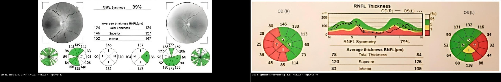
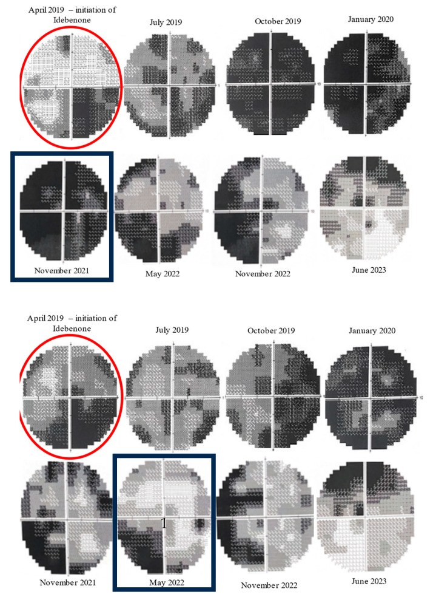
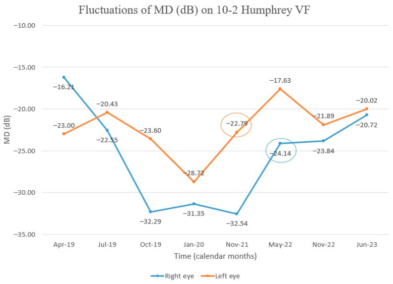
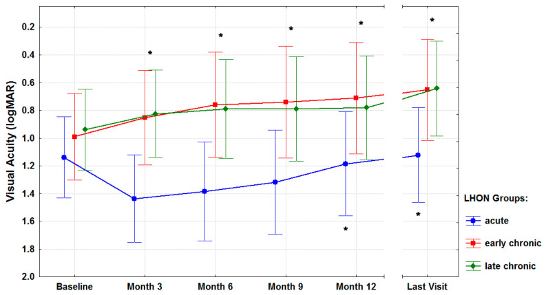
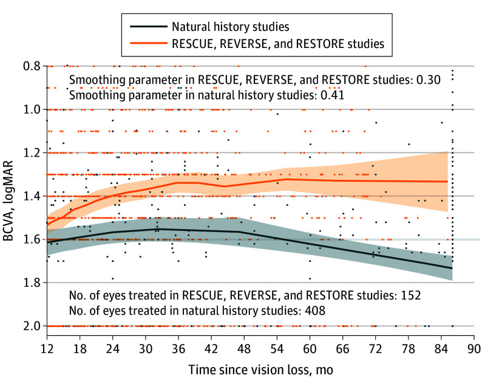
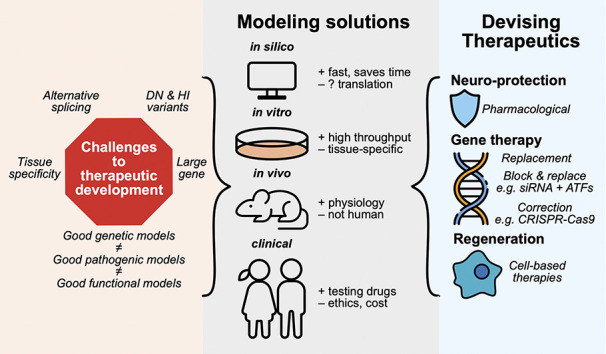
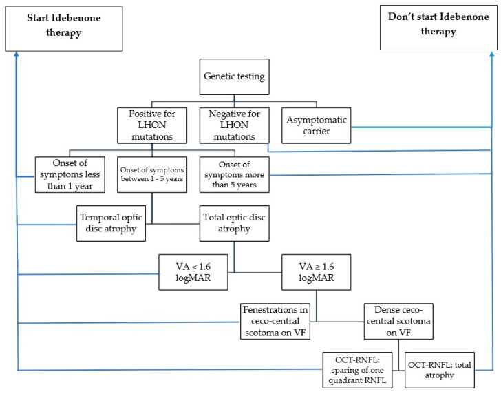

440 — Theo dõi & điều trị teo thị di truyền: idebenone, gene therapy & phục hồi chức năng / Hereditary optic atrophy — monitoring & treatment
Tags: pattern:teo-thi vung:than-kinh-thi score:logMAR protocol:OCT-thi-truong protocol:gene-therapy
Mức chắc chắn (certainty): tổng hợp y văn (literature synthesis) — nhóm tự biên từ y văn mở (Life 2023 CC BY + J Clin Med 2021 CC BY + JAMA Ophthalmol 2025 CC BY-NC-ND + J Neuroophthalmol 2023 CC BY + Indian J Ophthalmol 2025 CC BY-NC-SA), chưa gắn ca nguyên văn đơn lẻ.
Bài này là nửa sau của bài 439: 439 lo chẩn đoán – định lượng – gene; 440 lo theo dõi định kỳ + chọn thuốc/can thiệp + ngưỡng ngừng điều trị. Điểm chốt: teo thị di truyền không phải bệnh "hết thuốc" — RGC còn sống vẫn có thể "tái hoạt" chuyển tín hiệu và hồi phục một phần.
1. Tổng quan — vì sao vẫn hồi phục được, và số nào nằm lòng
- Cơ chế nền (nhắc 439): tế bào hạch võng mạc (retinal ganglion cell, RGC) tiêu thụ ATP cực lớn ở đoạn sợi trục chưa myelin (~1 mm trong nhãn cầu). Đột biến mtDNA (LHON m.11778G>A / m.14484T>C / m.3460G>A) hoặc gene nhân (OPA1, WFS1…) → chuỗi hô hấp ty thể hỏng → mất ATP + dư ROS → chết bó nhúi hoàng điểm. Nhưng: trong giai đoạn đầu, một phần RGC chỉ mất chức năng (dysfunctional), chưa chết — đây là "cửa sổ chữa được".
- TẠI SAO idebenone cứu được RGC "ngủ": idebenone là benzoquinone chuỗi ngắn — chuyển điện tử trực tiếp cho phức hợp III (complex III) bỏ qua phức hợp I (complex I) bị hỏng, khôi phục tổng hợp ATP và giảm ROS. Vì vậy hiệu quả không phụ thuộc đúng locus đột biến (dùng được cho cả 3 đột biến chính) và tốt nhất khi còn RGC sống.
- TẠI SAO gene therapy dùng được cho LHON: m.11778G>A nằm ở MT-ND4 (ND4) — protein hydrophobic, không qua được màng ty thể nếu chỉ chèn gene nhân. Chiến lược allotopic expression: gắn thêm tín hiệu định vị ty thể (MTS) để protein ND4 tổng hợp ở ribosome bào tương rồi nhập lại ty thể — vector rAAV2/2-ND4 (lenadogene nolparvovec), 1 mũi tiêm nội dịch kính duy nhất.
- Số nằm lòng (định lượng):
- Idebenone liều được duyệt: 900 mg/ngày (Raxone 150 mg × 6 viên; uống cùng thức ăn để tăng sinh khả dụng); chưa đủ dữ liệu < 12 tuổi.
- Mức cải thiện thị lực theo thời điểm bắt đầu điều trị (23 BN LHON, J Clin Med 2021): cấp (≤ 1 năm): −0,52 ± 0,46 logMAR; bán cấp (1–5 năm): −0,39 ± 0,27 logMAR; mạn (> 5 năm): −0,33 ± 0,28 logMAR (p < 0,001 mọi nhóm) — càng sớm càng tốt, nhưng mạn vẫn hồi phục được.
- Theo dõi mỗi 3 tháng khi đang điều trị; ngừng idebenone khi thị lực + thị trường ỔN ĐỊNH 12 tháng không còn cải thiện.
- Gene therapy (lenadogene nolparvovec, RESTORE 5 năm): 76 BN tiêm (RESCUE 39 + REVERSE 37) → 62 vào RESTORE (81,6%), 55 hoàn tất 5 năm; cải thiện 2 mắt tính từ nadir −0,4 ± 0,5 logMAR (> 4 dòng), 66,1% (41/62) đạt ≥ 3 dòng ở ≥ 1 mắt; khác biệt mắt tiêm vs mắt sham không có ý nghĩa (−0,05 logMAR; P = 0,27); viêm nội nhãn muộn 4 BN / 8 biến cố (2–5 năm).
- So sánh gián tiếp (645 BN / 17 nghiên cứu): 338 BN idebenone (9 nghiên cứu) vs 307 BN rAAV2-ND4 (8 nghiên cứu); không có thử nghiệm đầu-đối-đầu; khác biệt thị lực 6 tháng không có ý nghĩa (MD 0,07; P = 0,83).
- OPA1/DOA: CHƯA có thuốc được duyệt — chỉ có đường ống phát triển (neuroprotection, gene replacement, CRISPR, tế bào); kiểm soát yếu tố nguy cơ và phục hồi chức năng.
2. Mẫu hình + chẩn đoán phân biệt theo giai đoạn (gamut)
- Câu hỏi lọc 1 — giai đoạn so với khởi phát: cấp ≤ 1 năm (RNFL còn phù/giả phù đĩa, GCL đã bắt đầu mỏng) · bán cấp 1–5 năm (RNFL/GCL mỏng tiến triển) · mạn > 5 năm (RNFL teo thái dương–lan tỏa, GCL mỏng nặng).
- Câu hỏi lọc 2 — genotype quyết định can thiệp: LHON m.11778/14484/3460 → idebenone ± gene therapy (chỉ ND4/11778 mới có liệu pháp gene đã thử nghiệm) · OPA1 (DOA) → chưa có thuốc đặc hiệu, theo dõi + tránh độc chất · WFS1 → kiểm soát DM/ĐTĐ nhạt/điếc song song.
- Mẫu hình OCT theo thời gian (trục theo dõi): cấp = RNFL DÀY (phù) + GCL mỏng sớm → teo thái dương chọn lọc → mạn = RNFL mỏng lan tỏa; GCL mỏng là dấu sớm nhất (đôi khi đã mỏng khi RNFL còn phù, xem 434).
- Gamut "tái hoạt": thị lực đứng yên rồi cải thiện chậm sau nhiều tháng điều trị (báo cáo tới 36 tháng) — đừng ngừng quá sớm vì thấy "đứng"; mốc ngừng là 12 tháng ổn định.
3. Bảng so sánh phân biệt (ma trận đối chiếu) — chọn can thiệp
| Lựa chọn (option) | Chỉ định / hình ảnh theo dõi | Chốt vào (rule-in) | Chốt loại (rule-out) | Gợi ý xác nhận |
|---|---|---|---|---|
| Idebenone uống | LHON có đột biến (mọi locus), còn giai đoạn hồi phục; OCT RNFL/GCL, thị trường 24-2/10-2 | LHON + RGC còn sống (GCL chưa mất hoàn toàn) + khởi phát càng gần càng tốt | Người mang gene KHÔNG triệu chứng (chưa có chỉ định); thị lực + thị trường đã ổn định 12 tháng | 900 mg/ngày ÷ 6 viên, cùng thức ăn; khám 3 tháng/lần |
| Gene therapy rAAV2/2-ND4 | LHON do m.11778G>A (MT-ND4); tiêm nội dịch kính 1 lần | m.11778G>A + mất thị lực còn trong cửa sổ (RESCUE ≤ 6 tháng, REVERSE 7–12 tháng) | Đột biến khác ND4 (14484/3460) không có chỉ định virus này | Theo dõi viêm nội nhãn tới 5 năm; BCVA từ nadir −0,4 logMAR |
| EPI-743 / đồng yếu tố ty thể | Liệu pháp bổ trợ, bằng chứng yếu; thử nghiệm nhỏ ở trẻ DOA/LHON | DOA nặng, tiến triển nhanh khi chưa có thuốc duyệt (đồng thuận nhóm, không bắt buộc) | Không có bằng chứng pha 3 → không thay thế idebenone/gene ở LHON | Thử nghiệm lâm sàng có kiểm soát |
| Phục hồi chức năng thị giác | Cận thị hỗ trợ (kính viễn/trợ thị), đào tạo lệch manh điểm, hỗ trợ đọc | Teo thị 2 bên mọi mức, kể cả đã "hết thuốc" | Không dùng để thay cho điều trị sinh học khi còn cửa sổ | Khám chỉnh thị + phục hồi chức năng |
| Tránh độc chất ty thể | Ethambutol > 15 mg/kg/ngày, linezolid, amiodarone, rượu–thuốc lá, thiếu B12 | Đang dùng thuốc độc ti thể + teo thị | Không phơi nhiễm + tiền sử gia đình rõ → di truyền thuần | Ngưng thuốc; B12/homocysteine, xem 434 |
| Kiểm soát bệnh hệ thống (WFS1) | WFS1: DM, ĐTĐ nhạt, điếc, thần kinh | Bộ tứ DIDMOAD | Teo thị đơn thuần → DOA/OPA1 | HbA1c, copeptin/nhịn nước, audiometry (xem 439) |

Trái: cấp — RNFL DÀY 2 mắt (phù đĩa, sinh hiệu còn "hy vọng"); phải: sau 9 tháng idebenone — teo ô thái dương + dưới (RNFL thái dương OD 25 µm / OS 32 µm, mất "đối xứng" 89% → 79%) — cùng một bệnh, hai thì. Nguồn: Life 2023 (PMC10608457) Fig. 6 & 10, CC BY 4.0. Ảnh ghép letterbox.Quiz composite: che 2 nhãn, hỏi thời điểm nào còn "đáng đầu tư" điều trị và dấu OCT nào cho biết đã sang thì teo?
Bấm để hiện đáp án
- Thì cấp (trái) = cửa sổ điều trị tốt nhất: RNFL dày do phù nghĩa là sợi trục còn đó, RGC chỉ "ngủ" → idebenone (và/hoặc gene nếu m.11778) có cơ hội.
- Thì teo (phải) = đã mất sợi trục: RNFL ô thái dương + dưới tụt còn 25–32 µm (ngoài giới hạn bình thường, đỏ), đối xứng RNFL tụt 89% → 79% — nhưng mạn vẫn có thể hồi phục một phần (−0,33 logMAR, xem mục 1), nên không từ chối điều trị chỉ vì đã teo.
- Nguồn: Life 2023 (PMC10608457) Fig. 6 và 10, CC BY 4.0.
4. Protocol theo dõi + ngưỡng ngừng điều trị + flowchart
- Bộ đánh giá mỗi lần khám (3 tháng/lần khi điều trị): thị lực logMAR (ETDRS) · thị trường tự động 24-2 (và 10-2 khi còn ám điểm trung tâm) · OCT: pRNFL quanh đĩa + GCL/GCC hoàng điểm (ghi µm theo bản đồ tuổi) · thị giác màu · soi đáy mắt; ghi lại nadir (đáy thị lực) làm mốc tính "cải thiện từ nadir".
- Theo dõi cấu trúc (chốt tiến triển): BIO (RNFL) mỏng theo 4 ô; ô thái dương nhạy nhất (439: ~1,13 µm/năm) và GCL mỏng sớm hơn RNFL → theo dõi GCL để bắt tiến triển sớm; RNFL phù che mất mất GCL ở thì cấp.
- Ngưỡng ngừng idebenone: thị lực + thị trường ỔN ĐỊNH 12 tháng mà không cải thiện thêm → ngừng (có thể thử lại/thay đổi nếu tái tiến triển). Theo dõi ngay cả sau khi ngừng.
- Theo dõi dưới gene therapy: BCVA, NEI VFQ-25 (chất lượng sống), soi đáy mắt tìm viêm nội nhãn muộn tới 5 năm (4 BN/8 biến cố giữa 2–5 năm); OCT RNFL/GCL song song.
- MRI (loại trừ + WFS1): T1 fat-sat sau tiêm + T2 fat-sat ổ mắt/đường thị (loại viêm/chèn ép, 430); nghi WFS1 → MRI sọ–tuyến yên (mất tín hiệu sáng thùy sau tuyến yên T1, thoái hóa cầu não/tiểu não).
- Hồ sơ theo dõi gia đình: không dùng idebenone cho người mang gene không triệu chứng; sàng lọc anh chị em + tư vấn di truyền (dòng mẹ ở LHON; trội 50% ở OPA1); phục hồi chức năng + hỗ trợ xã hội ngay từ lúc chẩn đoán.
flowchart TD
A[Teo thi di truyen - da co gene] --> B{Co trieu chung?}
B -->|Khong: nguoi mang gene| Z[Khong dung idebenone - theo doi dinh ky]
B -->|Co: mat thi luc| C{Genotype}
C -->|LHON m.11778 ND4| D{Tuoi benh < 1 nam?}
C -->|LHON m.14484/3460| E[Idebenone 900 mg/ngay]
C -->|OPA1 / WFS1| F[Chua co thuoc duyet: theo doi + phuc hoi chuc nang + quan ly he thong]
D -->|Co: con cua so| G[Gene therapy raAV2-ND4 1 mui + idebenone]
D -->|Khong| E
E --> H[Kham 3 thang: logMAR + thi truong 24-2/10-2 + OCT RNFL/GCL]
G --> H
H --> I{Thi luc + thi truong on dinh 12 thang?}
I -->|Co| J[Ngung idebenone - tiep tuc theo doi]
I -->|Khong| H
H --> K{Soi day mat: viem noi nhan?}
K -->|Co trong 5 nam sau gene| L[Corticoid + theo doi sat]
5. Biến thể bình thường và cạm bẫy
- "Đã teo là hết" — SAI: nhóm mạn > 5 năm vẫn cải thiện −0,33 logMAR; kéo dài điều trị (báo cáo tới 36 tháng) vì hồi phục rất chậm → đừng ngừng sớm.
- Nhầm "ổn định 3–6 tháng" với "hết đáp ứng": mốc ngừng chính thức là 12 tháng ổn định, không phải 1 lần khám đứng yên.
- Theo dõi bằng RNFL đơn thuần ở thì cấp: phù RNFL có thể dày lên dù GCL đã mỏng → luôn đọc GCL/GCC song song (439/434).
- Cho người mang gene không triệu chứng uống idebenone: không có chỉ định — chỉ theo dõi (sơ đồ chọn bệnh, Life 2023).
- Bỏ sót nguyên nhân độc–chuyển hóa song song: ethambutol > 15 mg/kg/ngày, linezolid, amiodarone, B12 thấp, rượu–thuốc lá — ngưng thuốc có thể hồi phục; đừng quy hết cho "di truyền" (434).
- Gene therapy không phải "chữa khỏi": khác biệt mắt tiêm vs sham không có ý nghĩa ở 2 năm và 5 năm, lợi ích hai mắt từ nadir (cơ chế chuyển vector đối bên) — tư vấn đúng kỳ vọng; vẫn phải theo dõi viêm nội nhãn tới 5 năm.
- Không dùng idebenone cho < 12 tuổi (chưa đủ dữ liệu) và không quên cho uống cùng thức ăn (tăng hấp thu).
- Cạm bẫy hình ảnh: đĩa "nhợt giả" do ánh sáng kém/ảnh mờ trên OCT chất lượng thấp (signal quality thấp, hiển thị xám) → chụp lại trước khi kết luận tiến triển.
6. Tự lượng giá — Blind Quiz
Ca 1 — Nam 46 tuổi, LHON m.11778G>A thể bán cấp, bắt đầu idebenone; thị trường 24-2/10-2 trước và sau điều trị:

- Hỏi: đọc chuỗi thị trường 10-2 này thấy gì? Vì sao ban đầu xấu đi rồi mới tốt lên? Có nên ngừng thuốc khi 3 tháng đầu chưa cải thiện?
Bấm để hiện đáp án (findings + chẩn đoán)
- Dấu hiệu (findings): chuỗi 24-2/10-2 từ lúc bắt đầu idebenone — ban đầu ám điểm trung tâm sâu rộng hơn, sau ~30 tháng điều trị (11/2021) thu hẹp và nông dần, thị trường trung tâm cải thiện rõ (trên = mắt phải, dưới = mắt trái).
- Vì sao: hồi phục "tái hoạt" RGC rất chậm; giai đoạn đầu có thể còn tiến triển tự nhiên rồi mới cải thiện — đừng ngừng sớm.
- Xử trí: tiếp tục idebenone 900 mg/ngày, khám 3 tháng/lần; ngừng khi ổn định 12 tháng.
- Nguồn ảnh: Life 2023 (PMC10608457) Fig. 7, CC BY 4.0 (Baltă G et al.).
Ca 2 — Cùng bệnh nhân: theo dõi MD (mean deviation) trên thị trường 10-2:

- Hỏi: MD đi theo hướng nào? Mắt nào cải thiện trước? Điều này thay đổi cách bạn tư vấn gì?
Bấm để hiện đáp án (findings + chẩn đoán)
- Dấu hiệu (findings): MD giảm (xấu) thời gian đầu rồi cải thiện dần, mắt trái cải thiện trước (các giá trị được khoanh tròn là mốc cải thiện). Hai mắt không hồi phục đồng bộ.
- Tư vấn: đáp ứng từng mắt khác nhau và chậm — hứa hẹn dè dặt, kiên trì theo dõi.
- Nguồn ảnh: Life 2023 (PMC10608457) Fig. 8, CC BY 4.0.
Ca 3 — Nhóm BN LHON điều trị idebenone: thị lực (logMAR) theo thời gian, chia cấp / bán cấp / mạn:

- Hỏi: nhóm nào (xanh dương/đỏ/xanh lá) cải thiện mạnh nhất? Nói gì về "cửa sổ vàng"? Nhóm mạn có nên điều trị không?
Bấm để hiện đáp án (findings + chẩn đoán)
- Dấu hiệu (findings): xanh dương = cấp (≤ 1 năm) khởi đầu xấu nhất (logMAR cao nhất) nhưng cải thiện và duy trì tới "Last visit"; đỏ = bán cấp (1–5 năm) và xanh lá = mạn (> 5 năm) cũng hướng về thị lực tốt hơn theo thời gian (trục logMAR đảo: càng lên cao = càng tốt).
- Số: cấp −0,52 ± 0,46 logMAR (từ nadir); bán cấp −0,39 ± 0,27; mạn −0,33 ± 0,28 (p < 0,001 cả ba nhóm).
- Chốt: càng sớm càng tốt (cửa sổ vàng), NHƯNG mạn vẫn đáng điều trị — không từ chối nhóm mạn.
- Nguồn ảnh: J Clin Med 2021 (PMC7795141) Fig. 1, CC BY 4.0 (Pemp B et al.).
Ca 4 — BN LHON m.11778G>A được tiêm gene (rAAV2/2-ND4) một mắt; theo dõi BCVA nhiều năm:

- Hỏi: đường đỏ (nhóm tiêm) so đường đen (lịch sử tự nhiên) khác nhau thế nào? Lợi ích nằm ở mắt tiêm hay cả hai mắt?
Bấm để hiện đáp án (findings + chẩn đoán)
- Dấu hiệu (findings): đường đỏ (RESCUE/REVERSE/RESTORE, n = 152 mắt) nằm cao hơn (thị lực tốt hơn) so đường đen (lịch sử tự nhiên, n = 408 mắt) trên trục thời gian sau mất thị lực; khoảng tin cậy hẹp hơn.
- Số (RESTORE 5 năm): cải thiện từ nadir −0,4 ± 0,5 logMAR; 66,1% (41/62) đạt ≥ 3 dòng ở ≥ 1 mắt; khác biệt mắt tiêm vs sham không có ý nghĩa (−0,05 logMAR; P = 0,27) → lợi ích hai mắt (chuyển vector đối bên).
- An toàn: viêm nội nhãn muộn 4 BN / 8 biến cố (2–5 năm) → theo dõi đáy mắt dài hạn.
- Nguồn ảnh: JAMA Ophthalmol 2025 (PMC11843360) Fig. 2, CC BY-NC-ND 4.0 — ảnh giữ nguyên bản, không crop/ghép (Yu-Wai-Man P et al.).
Ca 5 — Bạn tư vấn BN DOA/OPA1 "có thuốc gì chưa?" Sơ đồ đường ống phát triển điều trị:

- Hỏi: kể 3 nhóm liệu pháp tương lai cho DOA? Vì sao OPA1 khó làm thuốc (gene lớn, nhiều biến thể)?
Bấm để hiện đáp án (findings + chẩn đoán)
- Dấu hiệu (findings): sơ đồ chia thách thức (gene lớn, biến thể DN/HI, tính đặc hiệu mô) → mô hình (in silico/in vitro/in vivo/lâm sàng) → liệu pháp: neuroprotection (dược lý), gene therapy (thay thế / khối-thay thế / hiệu chỉnh CRISPR) và tái tạo (liệu pháp tế bào).
- Chốt: OPA1/DOA hiện CHƯA có thuốc được duyệt — trả lời trung thực, định hướng thử nghiệm + phục hồi chức năng + kiểm soát độc chất.
- Nguồn ảnh: J Neuroophthalmol 2023 (PMC10645107) Fig. 4, CC BY 4.0 (Wong DCS et al.).
Ca 6 — Quy trình chọn bệnh nhân dùng idebenone (sơ đồ gốc):

- Hỏi: ai KHÔNG nên bắt đầu idebenone? Điểm nào dựa trên OCT-RNFL để quyết định?
Bấm để hiện đáp án (findings + chẩn đoán)
- Dấu hiệu (findings): nhánh "Don't start Idebenone": người mang gene KHÔNG triệu chứng; đối với có triệu chứng → cân nhắc theo thời gian từ khởi phát (< 1 năm / 1–5 năm / > 5 năm), kiểu teo (thái dương vs toàn đĩa), VA (≥/< 1,6 logMAR), thị trường (ám điểm nan hoa vs ám điểm trung tâm dày đặc).
- Điểm dựa trên OCT-RNFL: khi VA ≥ 1,6 logMAR → xét "sparing of one quadrant RNFL" (còn bảo tồn 1 ô RNFL) vs "total atrophy" (teo toàn bộ).
- Chốt thực hành: không dùng cho người mang gene không triệu chứng; quyết định dựa vào giai đoạn + OCT-RNFL + thị trường + VA.
- Nguồn ảnh: Life 2023 (PMC10608457) Scheme 1, CC BY 4.0.
Bài liên quan chéo
- 400 – Tổng quan Mắt
- 439 – Teo thị di truyền: DOA/OPA1 & Wolfram (nửa đầu: chẩn đoán – gene)
- 434 – Teo thị do độc–chuyển hóa & LHON (LHON; GCL/RNFL lệch pha)
- 430 – Đường thị giác: viêm vs NAION (loại viêm — ổn định/ngấm)
- 433 – Phù đĩa thị vs drusen (giả phù ở thì cấp)
- 442 – Glaucoma OCT (RNFL/GCL mỏng — so cơ chế)
- 437 – Teo thị kèm điếc (OPA1-plus/WFS1 trội — tầm soát điếc)
Ảnh
composite_440_phu-cap-vs-teo-sau-dieu-tri.jpg,440_idebenone-thi-truong-cai-thien_TVF_PMC10608457-Fig7.jpg,440_idebenone-MD-theo-doi_TVF_PMC10608457-Fig8.jpg,440_idebenone-OCT-9-thang-teo_OCT_PMC10608457-Fig10.jpg,440_idebenone-chon-benh-nhan_Sodo_PMC10608457-Scheme1.jpg,440_idebenone-OCT-phu-nang-cao_OCT_PMC10608457-Fig6.jpg— Life 2023 (PMCID: PMC10608457), CC BY 4.0.440_idebenone-thi-luc-theo-nhom_TVB_PMC7795141-Fig1.jpg,440_idebenone-thi-truong-man-tinh_TVF_PMC7795141-Fig4.jpg,440_idebenone-OCT-theo-thoi-gian_OCT_PMC7795141-Fig5.jpg— J Clin Med 2021 (PMCID: PMC7795141), CC BY 4.0.440_OPA1-duong-di-dieu-tri_Sodo_PMC10645107-Fig4.jpg— J Neuroophthalmol 2023 (PMCID: PMC10645107), CC BY 4.0.440_gene-therapy-TVL-5-nam_TVB_PMC11843360-Fig2.jpg— JAMA Ophthalmol 2025 (PMCID: PMC11843360), CC BY-NC-ND 4.0 (giữ nguyên bản).- Chi tiết giấy phép từng ảnh trong
images/CREDITS.md. AuntMinnie: chỉ dẫn link, không tải.
Không dùng để chẩn đoán độc lập khi chưa có người hướng dẫn.